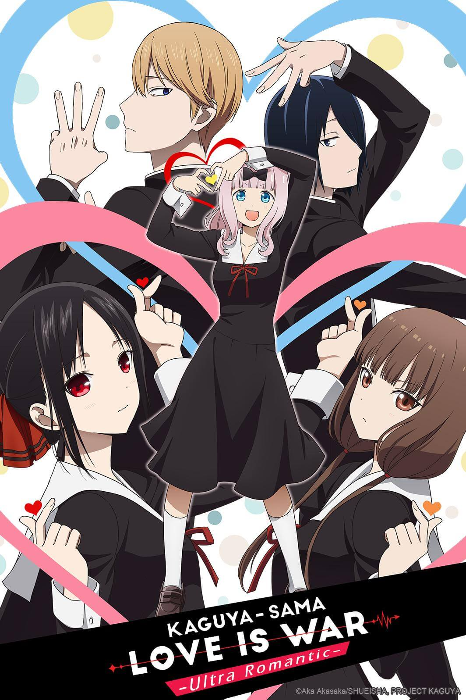
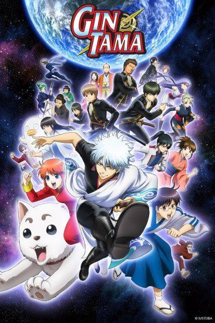
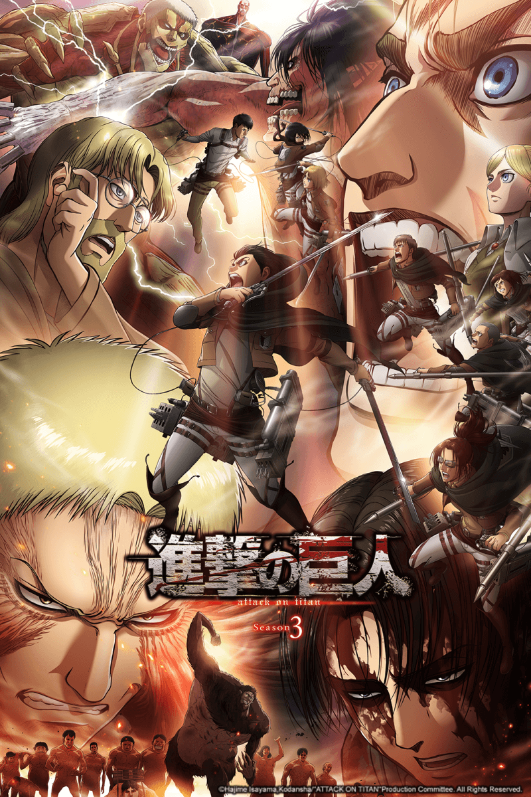

Kaguya-sama wa Kokurasetai: Ultra Romantic
#1
Tercera temporada de Kaguya-sama wa Kokurasetai: Tensai-tachi no Renai Zunousen.
Fullmetal Alchemist: Brotherhood
#2
La historia se centra en dos hermanos, Edward Elric y Alphonse Elric que rompieron el mayor
tabú de la alquimia, la trasmutación humana al tratar de revivir a su fallecida madre; en
consecuencia Edward pierde su pierna izquierda y Alphonse pierde todo su cuerpo, Edward para
salvar a su hermano sella su alma en una gran armadura de hierro a cambio de su brazo
derecho; ahora los dos con un nuevo objetivo buscan desesperadamente la piedra filosofal
para poder regresar sus cuerpos a la normalidad...

Cuarta Temporada de Gintama.
La historia se lleva a cabo en Akihabara y se trata de un grupo de amigos que ha
personalizado su horno de microondas en un dispositivo que puede enviar mensajes de texto al
pasado. A medida que se realizan diferentes experimentos, una organización llamada SERN que
ha estado haciendo su propia investigación sobre viaje en el tiempo que sigue la pista y
ahora los personajes tienen que encontrar una manera de evitar ser capturados por ellos.

Shingeki no Kyojin Season 3 Part 2
#5
Segunda parte de la tercera temporada de Shingeki no Kyojin.
Nueva temporada del anime de Gintama después de su descanso de un año, titulado como gintama
2011. La historia continua a partir del episodio 201 abarcando el tramo argumental desde el
tomo #32 con la saga Kabuki-chou.
Hunter x Hunter (2011)
#7
Gon Frecks,un niño de 12 años,vive con su tia Mito y su abuela en Isla Ballena, huérfano de
madre y según su tía también de padre. Un día Gon es atacado por un oso del bosque, pero es
salvado por un cazador quien le explica que está en busca de su maestro para así convertirse
en un cazador, el es quien le dice que su padre Gin esta vivo. Enterado de esto Gon decide
convertirse en cazador para poder encontrar a su padre.
Nueva Temporada de Gintama: Sakata Gintoki, Kagura y Shinpachi Shimura siguen en busca de
independencia y trabajo para pagar la renta mensual. Se emitirán una selección de episodios
anteriores, donde ademas se incluirán nuevos episodios.
Fruits Basket: The Final
#9
Última temporada de Fruits Basket.
Ginga Eiyuu Densetsu cuenta la historia de dos bandos, el Imperio Galáctico y la Alianza de
Planetas Libres. En el bando del Imperio Galactico se encuentra el Almirante Reinhard von
Musel, hermano de la protegida del Emperador y en el bando de la Alianza se encuentra el
Almirante Yang Wenli. Ambos tienen una visión estratégica impresionante que los lleva a
enfrentarse una y otra vez en las batallas. Sin embargo cada uno de ellos es repudiado por
sus superiores por motivos distintos. La batalla de los Héroes comienza aquí.